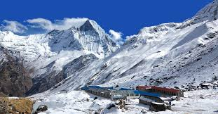
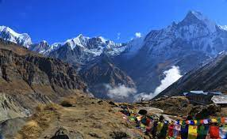
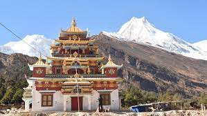
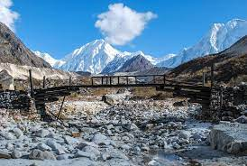
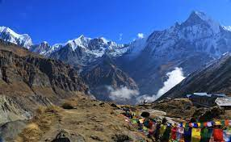
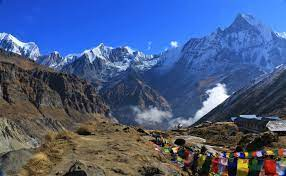

“A platform where you find your digitalized guide.”
Trekking
Annapurna Base Camp Trek


This trek is one of Nepal's sweetest adventures and most popular excursions, taking you through remote traditional villages in the beautiful Annapurna region, where you'll be greeted by breathtaking scenery and a rich culture. The world's tenth tallest mountain, Mt. Annapurna (8,091m), as well as the nearby summits exceeding 7,000m and 8,000m, are important draws for Annapurna base camp.
The trek path will feature multiple ascents and descents, beautiful woods of rhododendron, pine, and bamboo, waterfalls, and little attractive villages. ABC Trek does not require any prior trekking experience, but if you have one, it will undoubtedly benefit, so the adventure is appropriate for all of the ages. In fact, it is known as the most beautiful sanctuaries in the world, so every year thousands of travel lovers visit this region to experience the breathtaking views.
Time to visit:
The best seasons to trek to Annapurna Base Camp are Spring (March, April, May, June) and Autumn (end of September, October, November). During Spring, you can enjoy clear skies, comfortable temperatures, and blooming rhododendrons. .
Location:
Annapurna Base Camp is located in Kaski District, at an elevation of 4130 metres above sea level. It serves as the dynamic base camp for the Annapurna trekking region, which is the largest and contains the most kinds of flora and animals.
Manaslu Circuit Trek


The Manaslu Circuit Trek has everything you'd expect from a traditional Nepal trek: breathtaking landscape, close experiences with locals and their old culture, and a 17,000-foot (5,100-meter) Himalayan pass. Kimkim's trustworthy partners in Nepal organise weekly group departures during the spring and autumn trekking seasons, as well as private treks that can start on any date between February and June and September and November.
Time to visit:
The circuit can be successfully trekked in all four seasons, however the best times to visit the Manaslu base camp are in the spring (March, April, May) and autumn (September, October, November).
Location:
The mountain is located around 50 miles from the capital city of Kathmandu in the Gorkha district.
 
